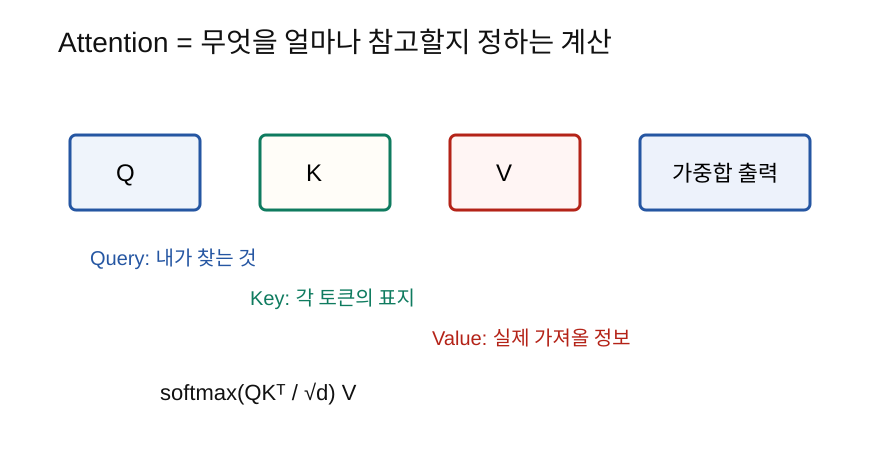

Attention은 각 토큰이 다른 토큰을 얼마나 참고할지 계산하는 방법이고, Transformer의 핵심 수식이다.
Transformer와 LLM을 이해하려면 attention 수식을 읽을 수 있어야 한다.
가장 유명한 수식은 다음과 같다.
Attention(Q, K, V) = softmax(QK^T / sqrt(d_k)) V처음 보면 복잡하지만, 의미는 단순하다.
무엇을 찾는가?
무엇과 관련 있는가?
관련 있는 정보를 얼마나 가져올 것인가?Attention에는 Q, K, V가 나온다.
| 기호 | 이름 | 쉬운 뜻 |
|---|---|---|
| Q | Query | 내가 찾는 것 |
| K | Key | 각 토큰의 표지 |
| V | Value | 실제 가져올 정보 |

예를 들어 도서관에서 책을 찾는다고 생각하자.
Query = 내가 찾는 주제
Key = 각 책의 제목과 태그
Value = 책의 실제 내용먼저 query와 key를 비교해서 관련 있는 책을 찾고, 그다음 value에서 내용을 가져온다.
QK^T이 부분은 query와 key의 유사도를 계산한다.
2단계에서 내적은 두 벡터가 얼마나 비슷한 방향인지 보는 계산이라고 했다.
attention에서도 비슷하다.
query와 key가 비슷하다 = 그 토큰을 많이 참고한다
query와 key가 다르다 = 그 토큰을 적게 참고한다벡터 차원이 커지면 내적값이 너무 커질 수 있다.
내적값이 너무 커지면 softmax가 한쪽으로 지나치게 쏠린다.
한 토큰만 거의 1
나머지는 거의 0그래서 sqrt(d_k)로 나누어 점수 크기를 조절한다.
QK^T / sqrt(d_k)이것은 softmax가 너무 극단적으로 되는 것을 완화한다.
유사도 점수는 아직 확률이 아니다.
softmax를 적용하면 각 토큰을 얼마나 참고할지 비율이 된다.
[2.0, 1.0, 0.1] -> softmax -> [0.66, 0.24, 0.10]attention에서는 이 비율을 attention weight라고 부른다.
softmax까지 계산하면 “어디를 얼마나 볼지”가 정해진다.
이제 실제 정보를 가져와야 한다. 그 실제 정보가 V다.
attention weight * V즉 많이 참고해야 할 토큰의 value는 많이 가져오고, 덜 중요한 토큰의 value는 조금 가져온다.
softmax(QK^T / sqrt(d_k)) V단계별로 읽으면 다음과 같다.
QK^T: query와 key의 유사도를 계산한다./ sqrt(d_k): 점수가 너무 커지지 않게 조절한다.softmax: 유사도 점수를 참고 비율로 바꾼다.V: 참고 비율대로 실제 정보를 섞어 가져온다.Transformer에는 residual connection도 자주 나온다.
출력 = 원래 입력 + 변환된 값쉽게 말하면 원래 정보를 보존하면서 새 계산 결과를 더하는 것이다.
이것이 필요한 이유:
Layer normalization은 한 토큰 내부의 숫자들을 안정적인 범위로 맞추는 작업이다.
정규화와 비슷한 감각이다.
숫자들이 너무 커지거나 작아지는 것을 막는다.
학습을 안정적으로 만든다.Transformer 블록에서는 보통 attention, residual, normalization이 함께 등장한다.
실제 코드는 대략 다음 느낌이다.
scores = Q @ K.T
scores = scores / math.sqrt(d_k)
weights = softmax(scores)
output = weights @ V수식과 코드가 거의 그대로 대응된다.
| 헷갈리는 말 | 쉽게 풀어쓴 말 |
|---|---|
| Q | 지금 토큰이 찾는 질문 |
| K | 각 토큰이 가진 검색용 표지 |
| V | 실제로 가져올 정보 |
| QK^T | 토큰끼리 얼마나 관련 있는지 |
| softmax | 참고 비율로 바꾸기 |
| residual | 원래 입력을 더해 보존하기 |
| layer norm | 숫자 범위를 안정화하기 |
QK^T는 왜 유사도 계산으로 볼 수 있는가?sqrt(d_k)로 나누는 이유는 무엇인가?V를 곱하는 이유는 무엇인가?Attention 수식은 복잡해 보이지만 핵심은 “관련 있는 정보를 더 많이
참고한다”이다. QK^T로 관련도를 계산하고, softmax로 참고
비율을 만들고, 그 비율대로 V의 정보를 섞는다. 이 구조가
Transformer와 LLM의 핵심 계산이다.
다음 노트: 12_작은신경망직접구현